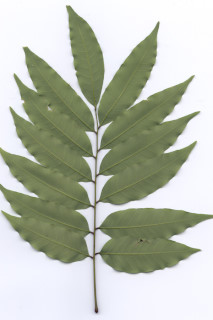
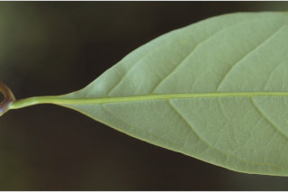
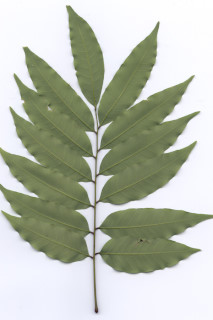
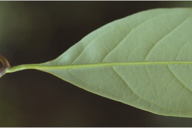

Large buttressed trees up to 25 m tall.
25 ಮೀ ಎತ್ತರದವರೆಗಿನ ದೊಡ್ಡ ಗಾತ್ರದ,ಆನಿಕೆಯುಳ್ಳ ಮರಗಳು.
Large buttressed trees up to 25 m tall.
பெரிய தாங்கு வேர்களுடையவை (பட்ரஸ்டு), 25 மீ. உயரம் வரை வளரக்கூடியது.
Bark brown, irregularly flaky when mature; inner bark cream.
ತೊಗಟೆ ಕಂದು ಬಣ್ಣದಲ್ಲಿದ್ದು ಅನಿಯತವಾಗಿ ಚಕ್ಕೆಯೆದ್ದ ಮಾದರಿಯಲ್ಲಿರುತ್ತದೆ;ಒಳ ತೊಗಟೆ ಕೆನೆ ಬಣ್ಣ ಹೊಂದಿರುತ್ತದೆ.
Bark brown, irregularly flaky when mature; inner bark cream.
மரத்தின் பட்டை ப்ரவுன், முதிரும் போது ஒழுங்கற்ற செதில்களாக உதிருபவை; உள்பட்டை கீரிம் நிறமானது.
Young branchlets terete, lenticellate, minutely stellate hairy when young, later glabrous.
ಎಳೆಯ ಕಿರುಕೊಂಬೆಗಳು ದುಂಡಾದ ಆಕಾರ ಹೊಂದಿದ್ದು ಬೆಂಡು ರಂಧ್ರಗಳ ಸಮೇತವಿರುತ್ತವೆ, ಎಲೆಯದಾಗಸೂಕ್ಷ್ಮದಾಗಿದ್ದಾಗ ನಕ್ಷತ್ರ ರೂಪದ ರೋಮಗಳನ್ನು ಹೊಂದಿರುತ್ತವೆ, ನಂತರ ರೋಮ ರಹಿತವಾಗಿರುತ್ತವೆ.
Young branchlets terete, lenticellate, minutely stellate hairy when young, later glabrous.
சிறியநுனிக்கிளைகள் குறுக்குவெட்டுத் தோற்றத்தில் வளையமானது, பட்டைத்துளைகள் (லெண்டிசெல்லேட்) உடையது, இளம்பருவத்தில் நுண்ணிய நட்சத்திர வடிவ உரோமங்களுடையது, முதிரும் போது உரோமங்களற்றது.
Leaves compound, usually imparipinnate, sometimes paripinnate, alternate, spiral, clustered at twig ends, 15-40 cm long; rachis terete, pulvinate; petiolule stout, 0.5-0.8 cm long, canaliculate; leaflets 4-8 (-10) pairs, alternate, 8-18.5 (-20.3) x 2.5-7 cm, lanceolate or narrow elliptic-oblong, apex gradually acuminate with blunt tip or subacute, sometimes obtuse, base rounded to acute, sometimes asymmetric, margin entire, coriaceous, glaucous beneath, glabrous; midrib slightly raised above; secondary_nerves 10-20 pairs, nearly straight and curved near margin; tertiary_nerves reticulo-percurrent.
ಎಲೆಗಳು ಸಂಯುಕ್ತ ಹಾಗೂ ಅಸಮ ಗರಿ ರೂಪಿ ಮಾದರಿಯದಾಗಿರುತ್ತವೆ,ಕೆಲವು ವೇಳೆ ಸಮಗರಿ ರೂಪಿಗಳಾಗಿರುತ್ತವೆ, ಪರ್ಯಾಯ ಮತ್ತು ಸುತ್ತು ಜೋಡನಾ ವ್ಯವಸ್ಥೆಯಲ್ಲಿದ್ದು ಕುಡಿಕೊಂಬೆಗಳ ತುದಿಯಲ್ಲಿ ಗುಂಪಾಗಿರುತ್ತವೆ ಹಾಗೂ 15 ರಿಂದ 40 ಸೆಂ.ಮೀ. ಉದ್ದವಿರುತ್ತವೆ; ಅಕ್ಷದಿಂಡು ದುಂಡಾಗಿದ್ದು ಉಬ್ಬಿದ ಬುಡದ ಸಮೇತವಿರುತ್ತದೆ; ಉಪತೊಟ್ಟುಗಳು ದೃಢವಾಗಿದ್ದು 0.2 ರಿಂದ 0.8 ಸೆಂ.ಮೀ. ಉದ್ದಹೊಂದಿದ್ದು ಕಾಲುವೆಗೆರೆಯ ಸಮೇತವಿರುತ್ತವೆ;ಉಪಪತ್ರಗಳು 4 ರಿಂದ 8(-10) ಜೋಡಿಗಳಿರುತ್ತವೆ ಮತ್ತು ಪರ್ಯಾಯ ರೀತಿಯಲ್ಲಿ ಜೋಡನೆಗೊಂಡಿದ್ದು,8-18.5(20.3) X 2.5-7 ಸೆಂ.ಮೀ. ಗಾತ್ರ,ಭರ್ಜಿ ಅಥವಾ ಸಂಕುಚಿತ ಅಂಡವೃತ್ತ –ಚತುರಸ್ರದ ಮಾದರಿಯ ಆಕಾರ, ಬರಬರುತ್ತಾ ಕ್ರಮೇಣ ಚೂಪಾಗುವ ಮೊಂಡಾಗ್ರವುಳ್ಳ ಅಥವಾ ಉಪಚೂಪಾದ, ಕೆಲವು ವೇಳೆ ಚೂಪಲ್ಲದ ತುದಿ, ದುಂಡಾಗಿರುವ ಮಾದರಿಯಿಂದ ಚೂಪಾಗಿರುವರೆಗಿನ, ಕೆಲವು ವೇಳೆ ಅಸಮ್ಮಿತಿಯಾದ ಬುಡ,ನಯವಾದ ಅಂಚು,ತೊಗಲನ್ನೋಲುವ ಮೇಲ್ಮೈ,ಮಾಸಲು ಬೂದು ಬಣ್ಣದ ತಳಭಾಗ ಹೊಂದಿದ್ದು ರೋಮರಹಿತವಾಗಿರುತ್ತದೆ;ಮಧ್ಯನಾಳ ಮೇಲ್ಭಾಗದಲ್ಲಿ ಸ್ವಲ್ಪ ಮಟ್ಟಿಗೆ ಮೇಲೆದ್ದಿರುತ್ತದೆ;ಎರಡನೇ ದರ್ಜೆಯ ನಾಳಗಳು 10 ರಿಂದ 20 ಜೋಡಿಗಳಿದ್ದು ಹೆಚ್ಚೂಕಡಿಮೆ ನೇರವಾಗಿದ್ದು ಅಂಚಿನ ಬಳಿ ಬಾಗಿರುತ್ತವೆ; ಮೂರನೇ ದರ್ಜೆಯ ನಾಳಗಳು ತೆಳುವಾಗಿದ್ದು ಜಾಲಬಂಧ ನಾಳ ವಿನ್ಯಾಸದಲ್ಲಿದ್ದು ಎಲೆ ದಿಂಡಿಗೆ ಅಡ್ಡವಾಗಿ ಕೂಡುತ್ತವೆ.
Leaves compound, usually imparipinnate, sometimes paripinnate, alternate, spiral, clustered at twig ends, 15-40 cm long; rachis terete, pulvinate; petiolule stout, 0.5-0.8 cm long, canaliculate; leaflets 4-8 (-10) pairs, alternate, 8-18.5 (-20.3) x 2.5-7 cm, lanceolate or narrow elliptic-oblong, apex gradually acuminate with blunt tip or subacute, sometimes obtuse, base rounded to acute, sometimes asymmetric, margin entire, coriaceous, glaucous beneath, glabrous; midrib slightly raised above; secondary_nerves 10-20 pairs, nearly straight and curved near margin; tertiary_nerves reticulo-percurrent.
இலைகள் கூட்டிலை, ஒற்றைபடை சிறகு வடிவக்கூட்டிலைகள், சிலசமயங்களில் இரட்டைபடை சிறகுவடிவக்கூட்டிலை (பேரிபின்னேட்), மாற்றுஅடுக்கமானவை, சுழல் போன்று அமைந்தவை, சிறுகிளைகளின் நுனியில் இலைகள் கூட்டமாக மற்றும் நெருக்கமாக காணப்படும், 15-40 செ.மீ. நீளமானது; மத்தியகாம்பு (ராக்கிஸ்) குறுக்குவெட்டுத் தோற்றத்தில் வளையமானது, பல்வினேட்; சிற்றிலைக்காம்பு தடித்தவை, 0.5-0.8 செ.மீ. நீளமானது, குறுக்குவெட்டுத் தோற்றத்தில் கேனாலிகுலேட்; சிற்றிலை 4-8 (-10) ஜோடிகள், மாற்றுஅடுக்கமானவை, 8-18.5 (-20.3) X 2.5-7 செ.மீ., ஈட்டி வடிவானது அல்லது குறுகிய நீள்வட்டம்-நீள்சதுர வடிவானது, அலகின் நுனி சீராக சிறிது அதிக்கூரியதுடன் அதன் முனை மழுங்கியது அல்லது கூரியது போன்றது, சிலசமயங்களில் மெட்டையானது, அலகின் தளம் வட்டமானது முதல் கூரியது, சிலசமயங்களில் சமமற்றது, அலகின் விளிம்பு முழுமையானது, கோரியேசியஸ், அலகின் கீழ்பரப்பு மெழுகு பூசியது போன்றது அல்லது சாம்பல் கலந்த நீல நிறமானது (க்களாக்கஸ்), உரோமங்களற்றது; மையநரம்பு மேற்புறத்தில் அலகின் பரப்பைவிட சிறிது உயர்ந்து இருக்கும்; இரண்டாம் நிலை நரம்புகள் 10-20 ஜோடிகள், கிட்டதட்ட நோரானது மற்றும் விளிம்பின் அருகில் வளைந்தவை; மூன்றாம் நிலை நரம்புகள் வலைப்பின்னல்-பெர்க்கரண்ட் போன்றவை.
Inflorescence terminal and axillary, much branched panicles; flowers sessile.
ಪುಷ್ಪಮಂಜರಿಗಳು ತುದಿಯಲ್ಲಿನ ಮತ್ತು ಅಕ್ಷಾಕಂಕುಳಿನಲ್ಲಿರುವ ಹೆಚ್ಚಾಗಿ, ಪುನರಾವೃತ್ತಿಯಾಗಿ ಕವಲೊಡೆಯುವ ಮಾದರಿಯವು;ಹೂಗಳು ತೊಟ್ಟುರಹಿತ.
Inflorescence terminal and axillary, much branched panicles; flowers sessile.
மஞ்சரி தண்டின் நுனியில் காணப்படும் மற்றும் இலைக்கோணங்களில் காணப்படுபவை, கிளைத்த பேனிக்கிள் வகை மஞ்சரி; மலர்கள் காம்பற்றது.
Schizocarp, globose, tubercled, red, 1.5 cm across; seed one.
ಷೈಝೋಕಾರ್ಪುಗಳು ಗೋಳದ ಆಕಾರದಲ್ಲಿದ್ದು ಗುಬುಟುಗಳ ಸಮೇತವಿರುತ್ತವೆ, ಕೆಂಪಾಗಿದ್ದು, 1.5 ಸೆಂ.ಮೀ. ಅಡ್ಡಗಲತೆಯನ್ನು ಹೊಮದಿರುತ್ತವೆ;ಬೀಜಗಳ ಸಂಖ್ಯೆ 1.
Schizocarp, globose, tubercled, red, 1.5 cm across; seed one.
சைசோகார்ப், கோள வடிவமானது, கழலைகளுடையது, சிவப்பு நிறமானது, 1.5 செ.மீ. குறுக்களவுடையது; ஒர் விதையுடையது.

 


